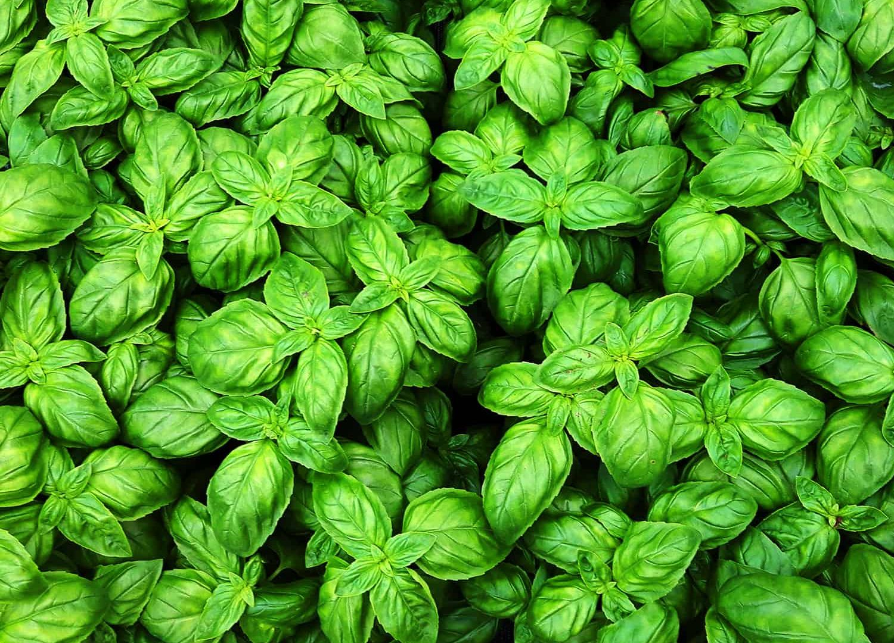

Sweet Basil is a popular aromatic herb known for its fresh green leaves and pleasant fragrance. It is widely used in cooking, especially in pasta, salads, soups, and sauces. Basil grows quickly in warm climates and is suitable for home gardens, pots, balconies, or small farming projects.
Needs 6–8 hours of direct sunlight daily for healthy growth and strong flavor.
Water regularly to keep soil slightly moist. Avoid overwatering or leaving roots in soggy soil.
Best growth at 20°C – 30°C. Protect from cold weather below 10°C.
Use well-draining fertile soil rich in compost or organic matter. Soil should stay moist but not waterlogged.
Can be harvested 4–6 weeks after planting. Pick leaves regularly and trim the top stems to encourage bushier growth.
Cooking herb for pasta, pizza, pesto, soups, salads, herbal tea, natural fragrance plant, decorative herb in gardens, companion plant for vegetables
Cause: Overwatering or poor drainage.
Solution: Reduce watering and improve soil drainage.
Cause: Underwatering or root damage.
Solution: Water properly and check roots.
Cause: Too much moisture on leaves.
Solution: Improve airflow and avoid watering leaves late evening.
Cause: Common garden pests.
Solution: Spray mild soap water or remove by hand.
Cause: Lack of sunlight or poor soil nutrients.
Solution: Move to sunnier area and add compost.